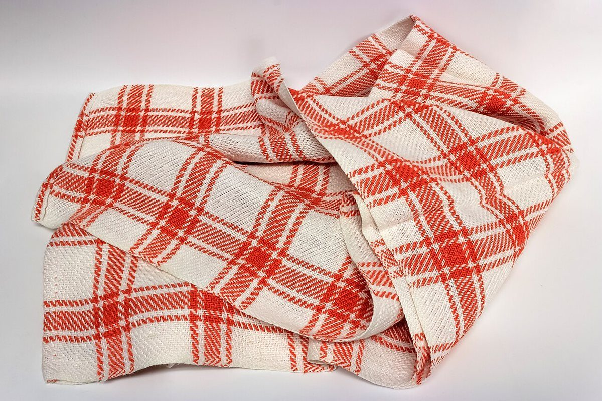

口コミ
こんなふうに思うかも
「行ってみたい」という気持ちを、制作側が創作したものです。
以下は制作側が考えた創作のイメージ例で、実在のお客様の投稿ではありません。実際の口コミ・評価とは関係ありません。
イメージ例行ってみたい、という気持ちを想像して
いつか行ってみたいパン屋さんとして、気になっています。まずはInstagramをのぞいてみたいです。
イメージ例投稿をのぞきたい、という気持ちを想像して
Instagramをのぞいてみたいと思います。どんな投稿が並んでいるのか、見るのが楽しみです。
イメージ例いつか訪れたい、という気持ちを想像して
近くへ行く機会があれば、いつか立ち寄ってみたいです。その日を楽しみにしています。
